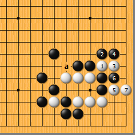
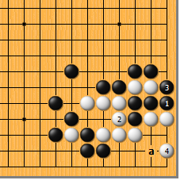
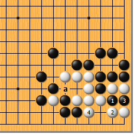
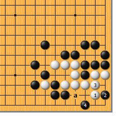
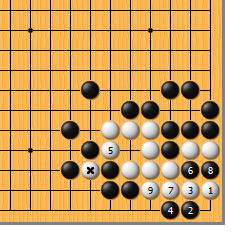
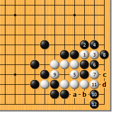
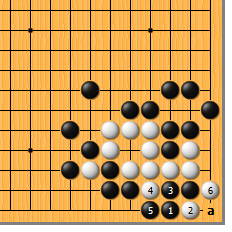

|  |  | |
| 图1 白1断，正所谓“棋从断处生”。黑2如于3位打，白2位长出后就产生了a位的冲，故黑只好于2位打。白3长，黑4贴，白5、7扳立，先做好准备工作…… | 图2 黑1紧住白气，是最强的应手。黑1如于3位提，白a位虎，可轻松成活。白2打，黑3提后，白于4位跳，是轻妙的一手！
| |
|
 |
 | |
图3 黑1如断吃，白2反打，是弃子求活的手段。黑3提，白4虎，由于a位有一后手眼，成“三眼两做”之形，净活。
| 图4 图2的白4如于本图1位虎，被黑2托，顿死。白3粘，则黑4先手飞，白只有一眼。白3即使于a位虎，黑3位扑，由于存在一路的透点，白仍只有一眼。 | |
|
 |
 | |
图5 白1跳时，再来看看黑2大飞的变化。这是凶狠的一着，白3压，黑4退。此时，白5做眼最好，黑6扑时，白7必须粘，黑8提，白9顶。由于白*子发挥作用，黑接不归。如此，白净活。
| 图6 白1、3断长后，如简单地于5、7位先手利，不行。黑8提后，白如9位做眼，被黑使出10点、12立的杀着，白不活。白9如于10虎，黑a、白b交换后，黑再于c位打，白d位虎做劫，结果是打劫。 | |
|  | 您的高见 | |
图7 前图的黑12是味道最好的渡法，其他渡法均不行。黑如1位尖，白有2位嵌的手筋！黑3粘，白4冲、6打，打劫吃接不归。黑1如于4位爬，白3冲，黑1挡，白2扑，黑a提，白再于5位扑，黑接不归。黑1如于3位爬，白4位冲，黑5位挡时，白2位夹，还原到本图。 |